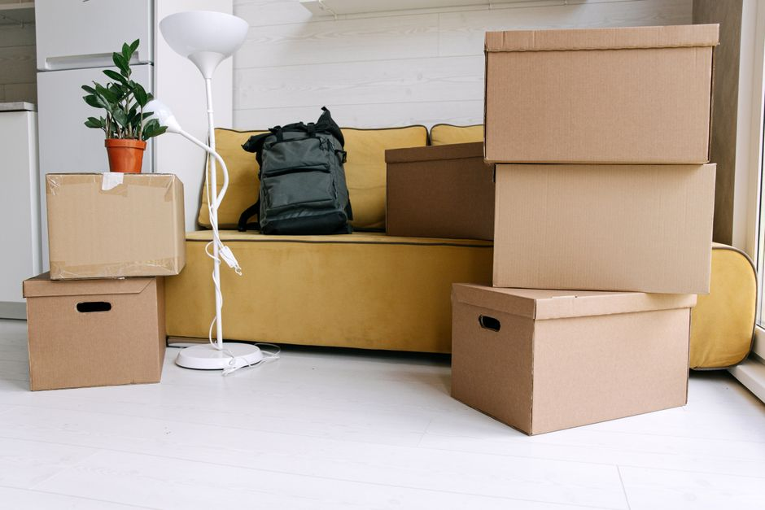
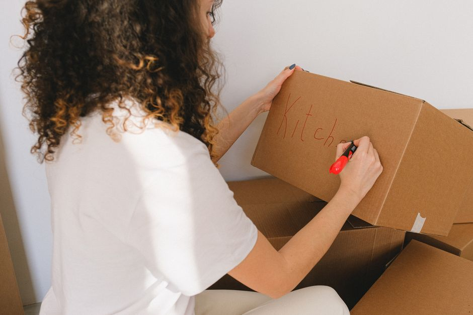

Innovations de rangement : les boîtes à multifonction pour petits espaces

Photo: Ivan S / Pexels
Désormais, l'art du rangement a trouvé une nouvelle alliée dans les boîtes multifonction pour petits espaces. Ces solutions innovantes sont conçues pour optimiser l'utilisation de votre espace de rangement, vous permettant de stocker plus de choses dans des volumes limités. Voici comment vous pouvez les intégrer dans votre routine de rangement quotidienne.
La polyvalence des boîtes à multifonction
Les boîtes à multifonction sont dotées de plusieurs compartiments, chacun avec un design adapté à un type de stockage spécifique. Elles sont idéales pour des espaces de rangement limités, comme une chambre d'étudiant, une garde-robe d'appartement, ou même un grenier de petite taille. Elles permettent de garder un espace organisé et accès facile à vos effets personnels, vêtements, chaussures, et autres accessoires.
Par exemple, une boîte multifonction peut avoir un compartiment de 15 cm de large pour des chaussures, un autre de 30 cm pour des sacs de sport, et un troisième de 20 cm pour des vêtements pliés. Chaque compartiment peut être fermé séparément, vous assurant un rangement sûr et organisé.
Conseil pratique : Personnalisez vos boîtes

Photo: SHVETS production / Pexels
Pour tirer le meilleur parti de vos boîtes à multifonction, personnalisez-les en fonction de vos besoins spécifiques. Par exemple, si vous avez besoin de stocker de nombreux accessoires électroménagers, optez pour des boîtes munies de compartiments de forme spécifique pour des câbles, des têtes de brosse, et des ustensiles. Cela peut diminuer les risques de détérioration ou de perte des articles stockés.
Rangement optimal : Trier votre contenu
Avant de commencer à ranger, triez vos effets personnels en catégories. Cela peut prendre une heure environ pour une personne de trier ses affaires dans des catégories telles que vêtements, chaussures, accessoires, et accessoires électroménagers. Après le tri, placez les articles dans les boîtes correspondantes. Par exemple, si vous avez 12 paires de chaussures, assignez une paire par compartiment, ce qui va faciliter le rangement et le dégagement.
Conseil pratique : Utilisez des marqueurs pour des compartiments
Pour rendre votre rangement plus efficace, utilisez des marqueurs de couleur sur les compartiments. Par exemple, une couleur pour les vêtements, une autre pour les chaussures, et une troisième pour les accessoires. Cela vous permettra de trouver rapidement ce dont vous avez besoin, même si vous n'avez pas le temps de le chercher soigneusement.
Optimisez l'utilisation de votre espace
Les boîtes multifonction sont généralement conçues pour s'adapter à différents supports de rangement, tels que des étagères, des tiroirs, ou des meubles de rangement muraires. Cela vous permet d'optimiser l'utilisation de l'espace disponible. Par exemple, une boîte de 20 cm de hauteur peut être adaptée à une étagère de 30 cm pour un rangement vertical.
Conseil pratique : Placez les boîtes en hauteur
Placez les boîtes dans des étagères ou des tiroirs en hauteur, si possible. Cela vous permet de maximiser l'espace vertical disponible, laissant de la place à vos pieds. Par exemple, vous pouvez placer des boîtes de 30 cm de hauteur sur des étagères de 40 cm, laissant 10 cm de place à la base pour d'autres objets ou pour un accès facile.
Maintenance régulière
Pour maintenir votre rangement efficace, nettoyez vos boîtes à multifonction toutes les six semaines environ. Cela vous permet de vérifier que tout est en ordre et de retirer les articles qui ne sont plus nécessaires. En général, chaque boîte contenant des vêtements nécessite un nettoyage plus régulier, car ces articles peuvent accueillir des micro-organismes.
Exemple concret : Un rangement pour un étudiant
Imaginez une chambre d'étudiant avec un petit espace de rangement. Un étudiant utilise une boîte à multifonction de 30 cm de large et 20 cm de profondeur, divisée en trois compartiments. Chaque compartiment est étiqueté avec une couleur et un type d'objet : une couleur pour les vêtements, une autre pour les chaussures, et une troisième pour les accessoires. Cette boîte est placée sur une étagère de 40 cm de hauteur, laissant de la place pour d'autres objets à la base. Ensuite, chaque semaine, l'étudiant nettoie et trie sa boîte pour s'assurer qu'elle est toujours en ordre et qu'elle contient uniquement les articles nécessaires.
Conclusion
Les boîtes à multifonction sont des outils de rangement innovants qui peuvent révolutionner la façon dont vous organisez vos petits espaces. En les adaptant à vos besoins et en les utilisant de manière efficace, vous pouvez optimiser votre espace de rangement et profiter d'un environnement organisé et accès facile à vos affaires. Alors, n'hésitez pas à investir dans ces solutions pour rendre votre espace de rangement plus efficace et plus pratique.
Produits recommandés
En tant que Partenaire Amazon, je réalise un bénéfice sur les achats remplissant les conditions requises.